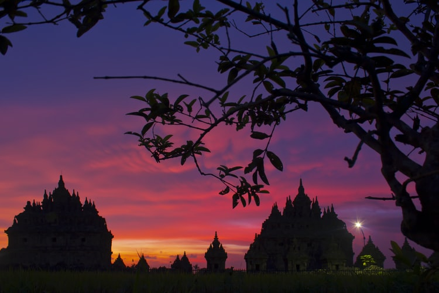

About Us

Menteri Pariwisata, Arief Yahya, dalam suatu kesempatan mengatakan, logo Pesona atau Wonderful Indonesia adalah janji pariwisata Indonesia kepada dunia, bahwa Indonesia kaya dengan ketakjuban, dari alam maupun budayanya. Indonesia menjadi tempat bagi semua orang untuk menikmati “World of Wonderful”.
Logo Wonderful Indonesia mengambil konsep dari Garuda Pancasila. Adapun lima kreteria dari Wonderful Indonesia adalah Wonderful Nature, Wonderful Culture, Wonderful People, Wonderful Food, Wonderful Value of Money.